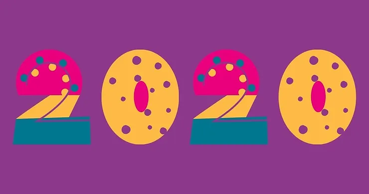

2020 – What a Year!
Title description, Jan 7, 2021

As a fictitious brand, there is no actual data on ECO Mark's performance in 2020. However, I can provide a hypothetical article on what the brand may have experienced during this year.
ECO Mark, like many other clothing brands, faced significant challenges in 2020 due to the COVID-19 pandemic. The global pandemic disrupted supply chains and manufacturing operations, leading to delays and shortages in the production of sustainable materials and products.
Despite these challenges, ECO Mark remained committed to its mission of sustainability and ethical practices. The brand pivoted to meet the changing needs of consumers, offering a wider range of comfortable and sustainable clothing options for those working from home and practicing social distancing.
ECO Mark also took steps to support its employees and manufacturing partners during the pandemic. The brand implemented safety measures in its factories and warehouses to protect workers, and ensured that everyone involved in the production process was paid a fair wage and provided with access to healthcare.
In addition, ECO Mark continued to prioritize sustainable materials and manufacturing processes in its products. The brand introduced new lines of eco-friendly clothing made from innovative materials such as recycled nylon and biodegradable fibers, and explored new ways to reduce waste and carbon emissions in its operations.
Despite the challenges of 2020, ECO Mark remained focused on its core values of sustainability and ethical practices. The brand's commitment to making a positive impact on the world through its products and practices has resonated with consumers, and has helped to establish ECO Mark as a leader in the sustainable fashion industry.
Looking to the future, ECO Mark is poised to continue its growth and innovation in the coming years. The brand's dedication to sustainability and ethical practices, combined with its focus on quality and innovation, make it a brand to watch in the world of sustainable fashion.
About Me
ECO Mark is a Fictitious sustainable clothing brand known for its eco-friendly and ethical practices.
The brand is causing a stir in the fashion industry with its latest product launch.